This guide is for the viewSymap user interface; Queries user guide is a separate HTML page.
- Please send bug reports and suggestions to cas1@arizona.edu.
- The documentation always applies to the latest release.
|
• General
|


Citation: The SyMAP User Agreement requires you to cite the following publication if you use SyMAP results in a paper, poster, or presentation.
C. Soderlund, M. Bomhoff, and W. Nelson (2010) SyMAP: A turnkey synteny system with application to plant genomes. Nucleic Acids Res 39(10):e68. Link
Also cite the MUMmer publication: Marcais et al. 2018 or Kurtz et al. 2004
Terminology
| Chromosome (Group) | For simplicity, sequence groups will be referred to as "Chromosome", though they may be scaffolds, linkage groups, etc. In some cases, "group" is used as a generic term in place of chromosome. |
| Hit (anchor) | A matched sequence between two chromosomes, computed by MUMmer. |
| Clustered hits | SyMAP clusters hits that are close or overlapping into a single hit for display; the MUMmer hits within the clustered hits are referred to as subhits. |
| Paired genes | Two genes joined by a hit. |
| Synteny block | An approximately-collinear sequences of anchors; a block can have intervening genes which do not align. There may be small inverted regions within a block. By default, blocks have at least 7 anchors. |
| Collinear set | A sequence of paired aligned genes with no intervening non-paired genes or inverted gene pairs. A set can consist of 2 or more genes. See details. |
More detailed terminology:
| Cluster Hit Algorithm:
Algo1 or Algo2 | During the synteny computation, either the Algo1 or Algo2 algorithm could have
been selected to cluster hits.
• The original Algo1 is gene-aware but does not know exon-intron structure.
The new Algo2 knows exon-intron structure.
See System Parameters for details.
• The Summary specifies which was used.
There are statistics in SyMAP that have different values based on which algorithm was run.
|
| Algo1:
g2, g1, g0 | A hit overlaps a gene on both sides (g2), a hit overlaps a gene on one side (g1), a hit overlaps no genes (g0). These are also written G2, G1, G0. |
| Algo2:
EE, EI, En, In, nn | E is exon, I is intron, n is intergenic. So a EI is a hit that at least partially aligns to an exon of one gene and an intron on the other, etc. |
| Gene# | This is the SyMAP assigned number representing the order of the gene. When genes overlap, they are given the same gene number with different suffixes. For example, see View a region. Gene numbering starts at 1 for each chromosome. |
| Major or minor assigned gene | When genes overlap, they may share hits in the overlapping regions. A clustered hit can only be assigned directly to one gene pair, which is the Major pair; the other gene pair is assigned to the hit as Minor and only shown in the Queries results. Major and minor genes must be on the same strand. |
| Hit# | The hits are numbered sequentially along the chromosome of the alphabetically lesser Directory name. For example, if on the Project Manager panel (see below), you select A.thal and B.rapa, which have Directory names Arab and Brapa, the hit numbering will be sequential down the Arab chromosomes. |
| Hit %Id | Percent identity of the alignment. The value of the "Identity" column is from the MUMmer file. If the hit has subhits, then this is an approximation. |
| Block and !Block | Hits that are in a block and hits that are not within a block, respectively. |
Project Manager
The display in the image on the lower right is shown when the following is executed from the terminal:./viewSymapIs it also available from ./symap, which will include the commands to build the synteny database.
|
All projects in the database will be listed on the left panel. The date beside the project name is when it was loaded. If a [n] follows the date, it is part of n computed syntenies. Selecting projects on the left panel shows them on the right panel. Clicking the View popups a window with the information about the project, e.g. View panel. A check mark (✓) in the Available Syntenies table indicates the pair has computed synteny that can be viewed. |
Project Manager
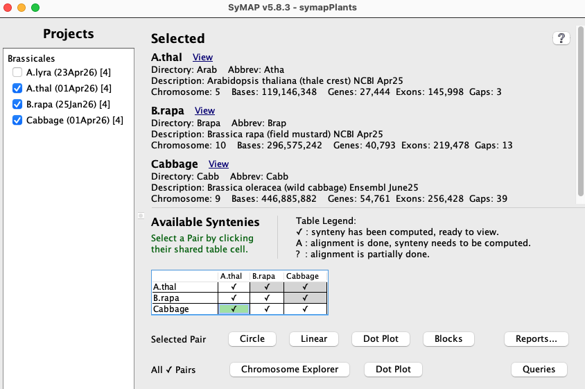 |


| Selected Pair | By selecting a cell with synteny (it will turn green), the adjacent views are enabled for the selected pair. The views are Circle, Dot Plot, Block View, and Reports.... |
| All ✓ Pairs | If there is at least one synteny pair (✓) in the table, the adjacent views will be enabled.
The views will be applied to ALL syntenies pairs in the table. For self-synteny, it must be the only project in the table. The views are Chromosome Explorer, Dot Plot and Queries. |
| Example |
In the above table, the views next to Selected Pair would be applied
to A.thal and Cabbage.
The views next to All ✓ Pairs would be applied to all 3 synteny pairs (✓ below the diagonal). They all have self-synteny (✓ on the diagonal), but each would only be shown if it is the only project in the table. |
Selected Pair (Two-genome views)
| Circle | Linear | Dot Plot | Blocks | Report | Summary | Go to top |
This section covers all Selected Pair two-genomes views. The Report and Summary are both in the Reports.. drop-down menu.
The Circle and Dot Plot have a #1 after them indicating they are the first of multiple types of the specified graphical display, and contain most of the explanation.
Circle #1 (Two Genome)
| Control Panel | Display options | Colors | Go to top |
The Circle can be viewed for two-genomes or multi-chromosomes. This section described the two-genome Circle, which also applies to the multi-chromosomes Circle.
|
The Circle display shows the chromosomes arranged in a circle,
with synteny blocks shown as colored blocks between the chromosomes.
The color of a block comes from one of the two chromosomes it connects; for example,
in the image on the right, the A.thal Chr05 color arc is gold and the corresponding
blocks are gold.
Project name: Move the mouse over a project name and click once. The project name will be shown in bold italics and the projects colors will be used for the blocks. For example, in the image on the right, A.thal is in italics and all the block are colored with its arc colors; click Cabbage and the blocks will be colored with its arc colors. Chromosome color arc: Move the mouse over an arc, followed by:
This can also be used to view self-synteny as described in Self-synteny. |
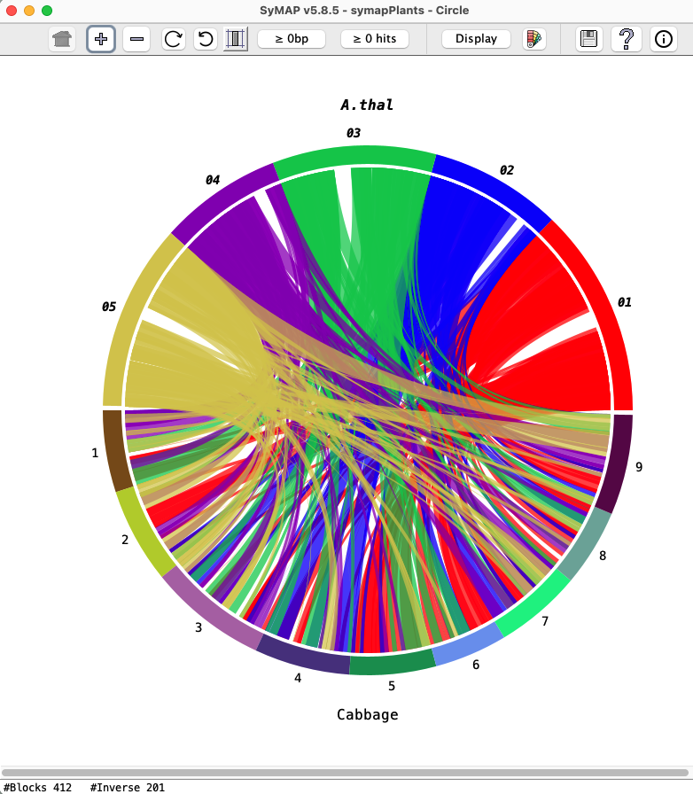 |

Circle Control Panel

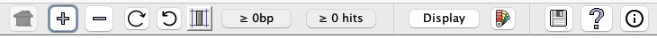
First group of buttons:
| Takes the display back to its original display settings, i.e. for all buttons up to the the first "|". | |
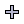 | Increase the circle size. |
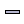 | Decrease the circle size. |
| Rotate the circle clock-wise. | |
| Rotate the circle counter-clock-wise. | |
| Toggle: Draw the chromosomes proportionately to their actual length in basepairs.
Un-toggled: Each species is allocated the same amount of space, e.g. for two species each one gets exactly half the circle. | |
| ≥ N bp | A block will be shown if its length on both sides is ≥ N, where N=0bp, 100k, 250k, 500k, 750k, 1M, 2M. |
| ≥ N hits | A block will be shown if its number of hits is ≥ N, where N= 0, 15, 25, 50, 100, 200. |
| Display pops up the Circle Display Options menu as described below. | |
| The 'Color Palette' pops up a menu as described in Circle Colors. The Circle colors are saved separately from the Linear colors. | |
Circle Display Options
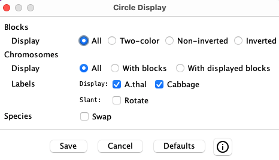 |
The window on the left will popup when the Display button is selected.
Selecting a checkbox or radio button will instantly change the display, but Save must be selected to keep the changes when the Display window is closed. |

| Blocks | |||||||||
| Display |
| ||||||||
| Chromosomes | |||||||||
| Display |
| ||||||||
| Label |
| ||||||||
| Species | |||||||||
| Swap |
| ||||||||
Circle and Linear Colors
Colors: On Save, the color settings are saved and will be reused on subsequent circle displays. Since it is not reasonable to set colors for each ribbon, this panel gives options to tailor the group circle of ribbon colors to your desire.
|
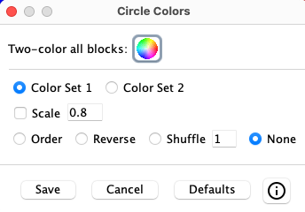 | ||||||||||||||

Linear (Two Genome)
| Control Panel | Display Options | Go to top |
The Linear display is similar to the Circle, but stretched out linearly. It only works for two genomes and does not work for self-synteny.
As with Circle, synteny blocks are shown as colored blocks between the chromosomes.
The color of a block comes from one of the two chromosomes it connects;
for example, in the image below, the A.thal Chr05 to Cabbage blocks are all gold.
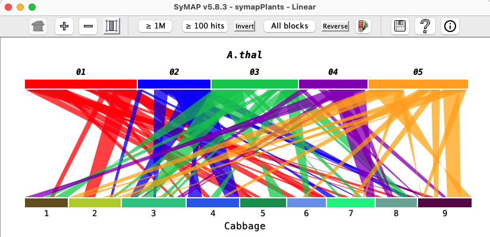

Project name: Move the mouse over a project name and click once. The project name will be shown in bold italics and the projects colors will be used for the blocks.
Move the mouse over a chromosome bar, followed by:
- Click: The blocks from the chromosome will be shown in front.
- Double-click: Only the blocks of the selected chromosome will be shown.
To undo, click a bar or project name.
Linear Control Panel

| Takes the display back to its original display settings, i.e. for all buttons up to the the 1st "|". | |
| Increase the vertical size. | |
| Decrease the vertical size. | |
| Toggle: Draw the chromosomes proportionately to their actual length in basepairs.
Un-toggled: Each species is allocated the same amount of space. | |
| ≥ N | A block will be shown if its length on both sides is ≥ N, where N= 0bp, 100k, 250k, 500k, 750k, 1M, 2M. |
| ≥ N hits | A block will be shown if its number of hits is ≥ N, where N= 0, 15, 25, 50, 100, 200. |
| Display pops up the Linear Display Options menu as described below. | |
| The 'Color Palette' pops up a menu as described in Circle Colors. The Circle colors are saved separately from the Linear colors. | |
Linear Display Options
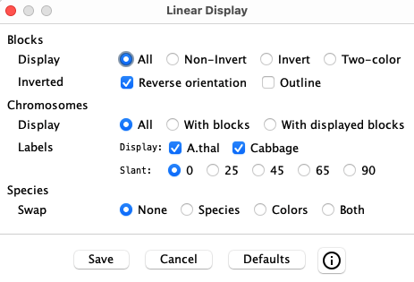 | The window on the left will popup when the Display button is selected.
Selecting a checkbox or radio button will instantly change the display, but Save must be selected to keep the changes when the Display window is closed. | 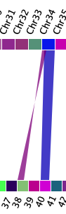 |


| Blocks | |||||||||
| Display |
| ||||||||
| Inverted |
| ||||||||
| Chromosomes | |||||||||
| Display |
| ||||||||
| Label |
| ||||||||
| Species | |||||||||
| Swap |
| ||||||||
| The benefit of the Swap is that you can put together a multi-species image in the way
you want. This is illustrated on the right, where humans are compared to both mouse and chimpanzee.
The top and bottom images were dragged into a powerpoint, which was used to create the picture. The area capture keys were used to snapshot the image. | 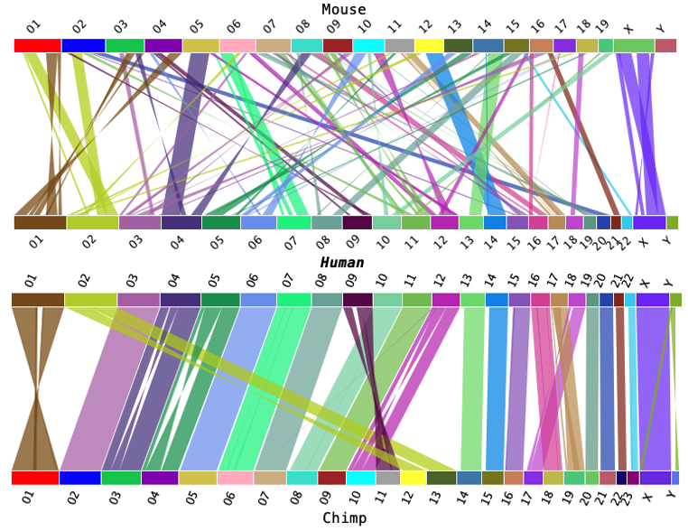 |

Dot Plot #1 (Two Genome)
| Control Panel | Filter | Go to top |
|
Dot plots are available for two-genomes, multiple-genomes and
multiple-chromosomes. This describes the two-genome view,
where the rules also apply to the other two views.
Dots represent anchors (hits). A blue box indicates a Synteny Block. A chromosome pair is represented by a cell. |
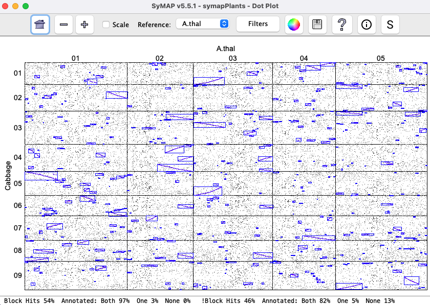 |

|
Clicking a cell will replace the whole genome view with the Dot Plot for the chromosome pair,
as shown on the right.
From the cell Dot Plot, display the 2D as follows:
|
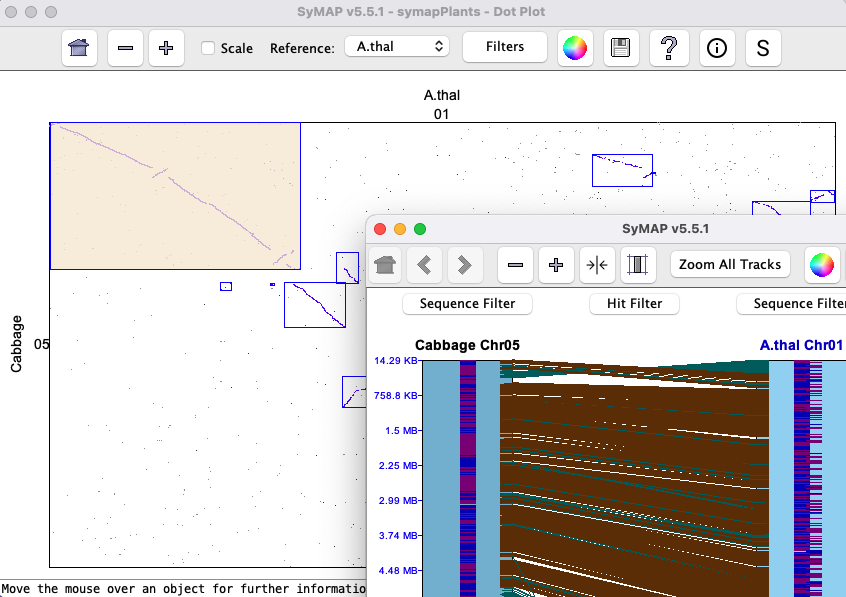 |

Control Panel

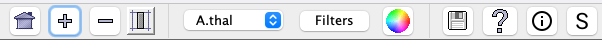
The following buttons change the size of the display:
| Revert the display back to full genome and its original size. | |
| Increase/decrease the dotplot size.
→Change the "1" in the text box to change the scale of and . Values of 1 to 10 are valid. →When showing a cell dotplot, if a block or region is selected (turning color beige), the dotplot will keep the beige region in view. Click outside the box to remove the highlighting. | |
| Toggle: Resizes the species displayed on the y-axis according to the current scale of the species displayed on the x-axis. Un-toggled: Each species is allocated the same amount of space. |
The following also change the display:
| Drop-down | The drop-down menu allows the reference species on the x-axis to be changed. |
| Filter | See Dot Plot filter below. |
| See Color Wheel, Print and Help. |
Information buttons:
| Displays the online help. | |
| Popup of quick help. | |
| Popup with more detailed statistics, i.e. more detail than shown at the bottom
of the display above. This text can be copied. An example popup is as follows:
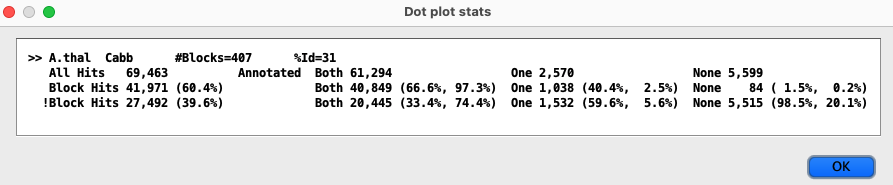 The %Id=31 is the filtered percent identity of the hits, which can be changed in the Dot Plot Filter. For the 3 Annotated columns (Both, One, None), the two percentages in parenthesis are the column (Annotated) percent and row (Block Hits) percent. |

Dot Plot Filter
The Filter settings are used for the duration of the given Dot Plot display. In contrast, the Color Icon settings are stored for subsequent Dot Plot displays.
|
As soon as a Filter option is changed, it will be reflected on the dotplot. However, no other panel can be
accessed until one of the following buttons is clicked, which will close the Filter window.
|
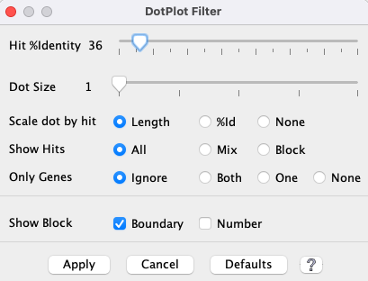 |

| Hit %Identity |
| ||||||||
| Dot Sizea |
| ||||||||
| Scale dot by hita |
| ||||||||
| Show Hits |
| ||||||||
| Gene Only |
| ||||||||
| Show Block |
|
Show all chromosomes (Not shown in above Filter image) This option is only present if at least one of the genomes displayed has >=20 chromosomes or scaffolds; this is most relevant when one genome is draft sequence, as there can be rows or columns with no blocks. When the option is deselected, it hides rows or columns that do not contain any synteny blocks.
Size of dots
| When the dots are all the same size (Scale dot by hit=None and Dot Size=1), they fit inside of their respective block. However, when they are changed to rectangles or their sizes increase, they can overlap the border of their block. This is illustrated on the right, where the dots are display by Length, Dot Size=3. The black and grey dots are non-block hits. Some of the blue block hits are on the border of the block blue box. |
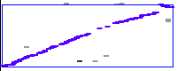 |

Blocks (Two Genome)
The image below shows the Block display for Cabbage to A.thal. The 9 Cabbage chromosomes are color coded as shown at the top, and aligned to the 5 A.thal chromosomes. The view can be reversed (i.e. A.thal to Cabbage) by selecting Reverse.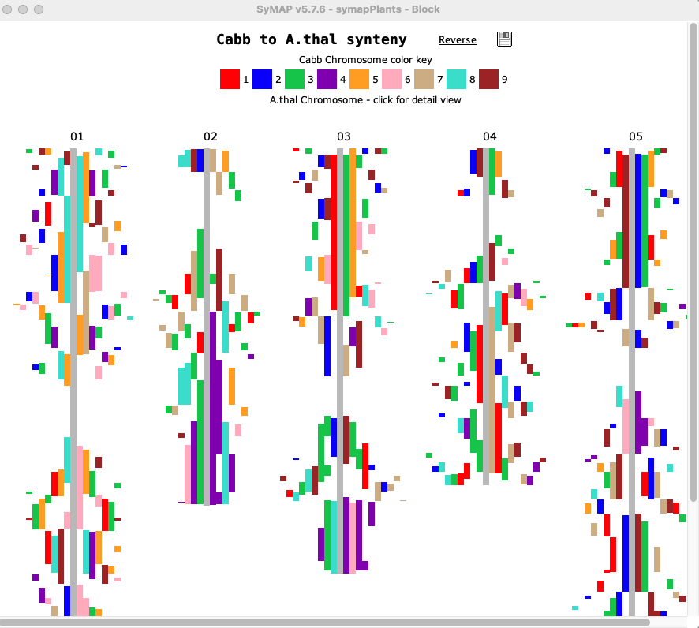 | Clicking a chromosome displays a window of the chromosome as shown below; the dotted border indicates an inverted block (i.e. the majority of hits are inverted). Clicking a block displays its 2D view in a popup window. |


Reports... (Two Genome)
| Select Reports... which
popups a menu as shown on the right.
The options are Summary, Block Report... and Export.... |
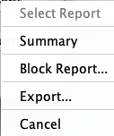 |

Summary
The Explain button on this view explains the different numbers.
Block Report
|
The panel on the right will be shown when Block Report is selected from the
Report... drop-down.
Reference: The Reference determines what species chromosomes and start coordinates will be sorted for display. Blocks plus, Blocks with gene info and Blocks summary are described below with examples. Output: The Popup popups a window with an HTML formatted report. The HTML File is written in a way that the file is easily edited. The TSV File can be loaded into Excel. Combine C1.C2.B If checked, the values for Chr1, Chr2 and Block will be one column where the values are separated by ".". If unchecked, these 3 values will have their own column. |
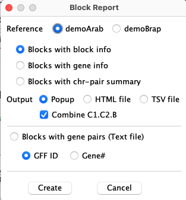 |

The following 3 options are available, where the top of an HTML table is shown for each:
⊚ Blocks plus: (Reference is A.thal, Combined unchecked); first two lines of report
| Chr01 | ChrX | Block | #Hits | PearsonR | A.thal AvgGap1 | B.rapa AvgGap2 | A.thal Length1 | B.rapa Length2 | A.thal Start1 | B.rapa Start2 |
| 01 | 01 | 1 | 26 | 0.992 | 30,798 | 98,780 | 826,961 | 2,531,385 | 3,104,633 | 17,277,988 |
| 01 | 01 | 2 | 8 | -0.988 | 100,814 | 85,161 | 721,937 | 613,967 | 10,855,813 | 5,391,401 |
- Chr01 and ChrX: The reference chromosome column heading will
specify the chromosome (e.g. Chr01).
The non-reference uses ChrX since X will change from 1-N, then
the next reference chromosome Chr02 rows begin, etc.
The column heading are displayed again each time the reference chromosome changes.
- PearsonR is the approximate linearity of the hits in the chain as measured by the Pearson correlation coefficient; a negative PCC is an inverted block.
- AvgGap is sum(gaps-between-genes)/number-gaps.
⊚ Blocks with gene info: (Reference is B.rapa, Combined checked); first two lines of report.
| Cx.01.B | #Hits | PearsonR | A.thal Start1 | A.thal End1 | B.rapa Start2 | B.rapa End2 | A.thal #Genes1 | A.thal %Genes1 | B.rapa #Genes2 | B.rapa %Genes2 |
| 01.01.2 | 8 | -0.988 | 10,855,813 | 11,577,749 | 5,391,401 | 6,005,367 | 159 | 0.050 | 102 | 0.078 |
| 01.01.8 | 14 | +0.996 | 22,899,952 | 23,962,187 | 6,598,655 | 7,843,377 | 275 | 0.051 | 190 | 0.074 |
- Cx.O1.B: The reference chromosome column heading will be in bold (e.g. 01). The non-reference uses Cx for the chromosome as it will change X=1 to N. The column heading are displayed again each time the reference chromosome changes.
- Genes1 column is the number of genes from Species1 in the block and %Genes1 is the percentage of genes that have a hit.
|
⊚ Blocks summary:
(Reference is A.thal, Combined unchecked).
The #Blocks and #Hits are the sum of blocks and hits
|
SyMAP Synteny Blocks for
|
Export...
| A file of blocks and their gene pairs will be written. If there are hits in a block that do not align to two genes, they are not written. The file format is described in Load Blocks. |
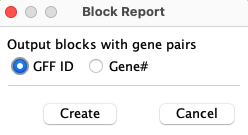 |

All Pairs
| Chromosome Explorer | Dot Plot #3 | Queries | Go to top |
| From the Project Manager, select two or more projects, which will activate the All ✓ Pairs buttons. |

Chromosome Explorer
| Circle #2 | Dot plot #2 | 2D Display | Go to top |
The Explorer is a two-panel display in which the left panel is used to select specific chromosomes, while the right panel shows the synteny for the selected chromosomes. Below is a snapshot of the Explorer showing the Circle, which is the initial view.

Left panel:The left panel controls which species and chromosomes are shown:
- Click a chromosome rectangle to add it to the display in the right panel. Click it again to remove it.
- Click the number above a chromosome to make it the reference. (The choice of reference sequence does not matter much for the Circle view, but it is important for the 2D and Dot Plot views; see below).
- Adding and removing chromosomes changes the Circle view instantly. To add/remove from the 2D or Dot Plot views, click the Circle button, make the change, and then click the 2D or Dot Plot button.
Information: As the mouse moves over various components, instructions or information for that component are shown in the Information box.
Views: The buttons in the lower-left corner of the window change the synteny view in the right panel.
Click the minus (-) button next to a project name or the Information box, and that section will be hidden; the minus sign will change to a plus. Click the plus (+) button to show the project or Information box.
Right panel: The right panel shows the synteny display for the species and chromosomes selected on the left. The three view for the right panel are Circle, 2D and Dot Plot. The Circle and Dot Plot are essentially overviews, while the 2D view allows zooming down to details, all the way to the basepair level.
Circle #2 (Multi-chromosome)
This view is illustrated in the above Chromosome Explorer image.
All features are described in the first Circle section,
except it is chromosome-based instead of genome-based. Plus:
|
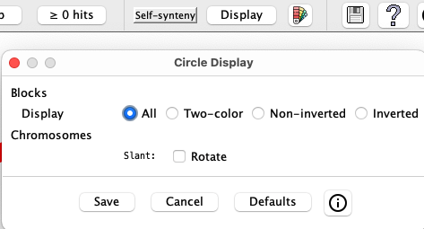 |

Dot Plot #2 (Multi-chromosome)
All features are described in the first Dot Plot section, except that it is chromosome-based instead of genome-based. When there is more that 2 species, selecting a chromosome pair (cell) will replace it with the Dot Plot for the cell. Clicking on a synteny block (or selected region) highlights it in beige, clicking it again brings up the 2D view.|
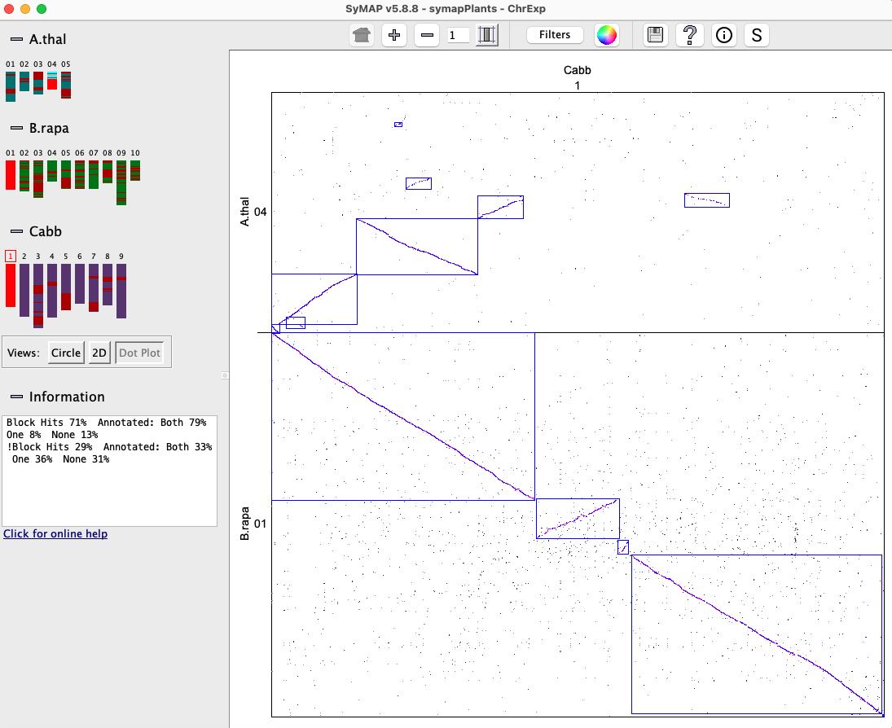 |
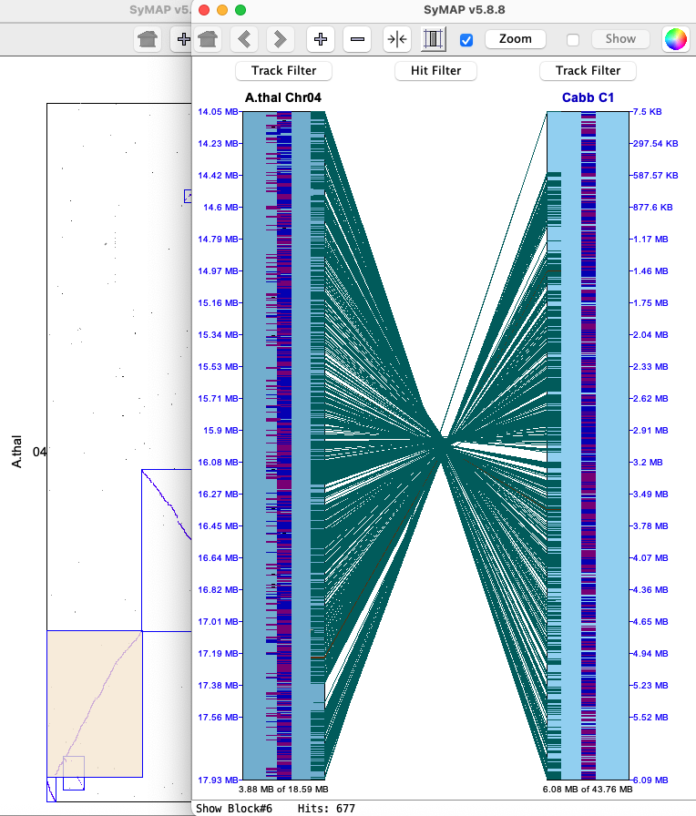 |


2D Display (Multi-chromosome)
| Full display | View a region | Hovers and popups | Control panel | Track Filter | Hit Filter | Go to top |
Full display
The 2D display is activated from the Explorer by clicking the 2D button (or by selecting a region or block from a Dot Plot).Below is an image depicting the block hits from A.thal Chr04 to Cabb C1 to B.rapa A01. Note that Cabb C1 is the reference chromosome, hence is placed in between the others.
Each chromosome is drawn as a light-blue rectangle, called tracks. The sequence length is shown at the bottom of a track; the coordinates are displayed on the side. Since A.thal Chr04 has been flipped using the Track Filter, its sequence length is shown at the top of the track.
|
The gene annotations (if exists) are drawn down the middle of the rectangle in dark-blue (positive strand) and purple (negative strand). Overlapping genes are horizontally staggered. The hits are the lines between tracks, referred to hit-wires, which connect the hit region on each sequence. Hit-wires colored brown align to the same strand on both sequences (i.e. ++,--) and light forest-green align to different strands (i.e. +-, -+). The display colors can be changed using the Color Icon in the upper right of the Control Panel (shown at the top of the 2D display). The tracks and hits can be filtered; see Track Filter and Hit Filter. |
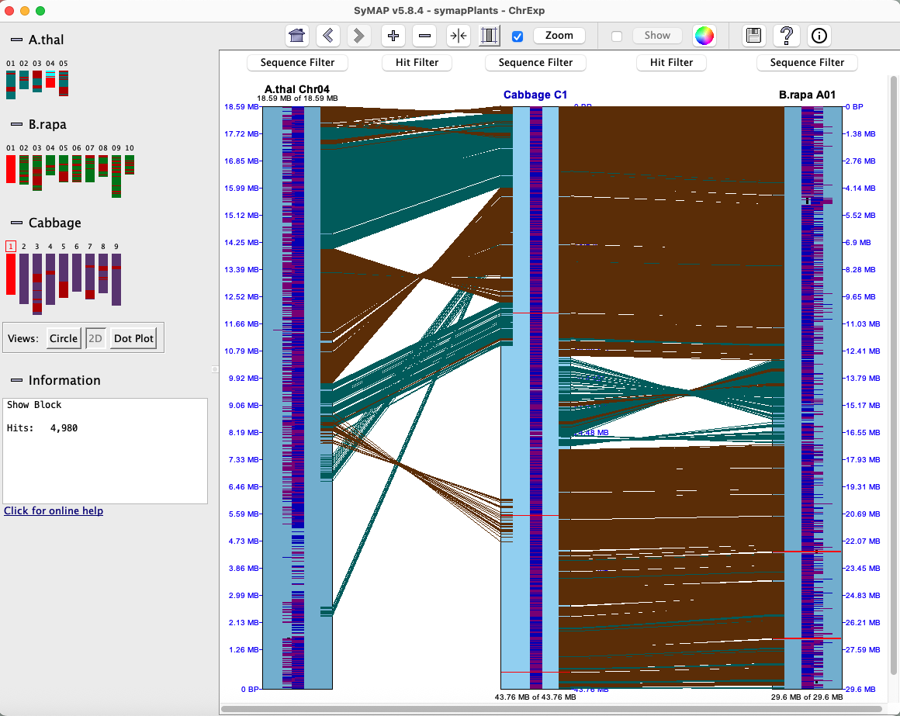 |

Graphics: Data from the input .gff files may specify the following types for display:
| Type | Display |
| Gaps | Red band across the chromosome |
| Centromere | Blue "X" across the chromosome |
| Predicted genes and exons | Annotation strip in center of chromosome, as described above. |
View a region
The selected region shown in the image below was created by left-clicking on Chr04 near coordinate 11,638.48kb, dragging the mouse to 11,642.75kb and releasing. The Track Filter was set to display Annotations.
|
Genes:
The introns are drawn as thinner black rectangles. The exons are drawn as thicker rectangles,
colored dark blue (positive strand) or purple (negative strand).
The staggered genes, where one is further out then the other, indicate overlapping genes; they have the same Gene# with a different suffix. Hits: The hit-wires connects the aligned regions on the two sequences. The aligned region graphics, located on the track at the end of the hit-wire, extends the length of the hit. Clustered hits are multiple subhits clustered together with gaps in between, where the gaps are represented by a grey area. |
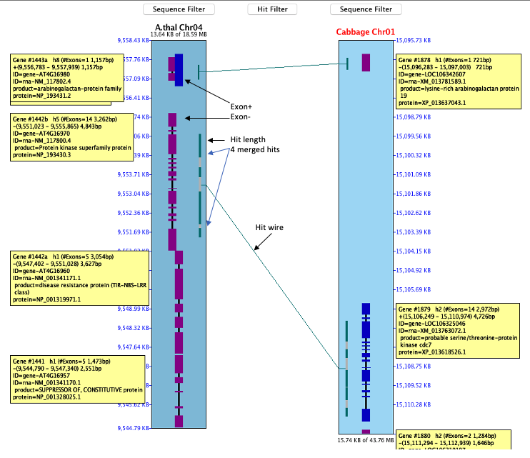 |

Hovers and popups
| Hit Details | Gene Details | Hit-Gene Details | Go to top |
Hovering the mouse over a hit-wire or gene shows information about them, either in the Information box for the full 2D or at the bottom of the window on the popup 2D from Dot Plot.
Right clicking on a hit-wire or gene popups a window with additional information. The information in a popup can be copied (i.e. drag the mouse over text and copy). The popup does not go away until the OK button is selected or the SyMAP is exited. Any number of gene popups can be present.
Note: On Linux Ubuntu, the popup information windows will not stay in front; drag them to the side of a larger window to keep them in view.
Hit Details
|
Information: Hovering the mouse over a hit-wire will
show its information in the Information box. Right click on hit-wire shows additional information in the hit popup. |
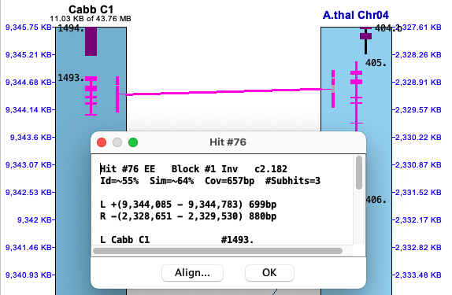 |


| 1st line | |
| Hit # | The number representing the hit for the chromosome pair. See Terminology. |
| gN or XX | Algo1 (N={0,1,2}): Hit overlaps 0 gene (g0), 1 gene (g1), 2 genes (g2).
Algo2 (X={E,I,n}): Hit overlaps two exons (EE), exon-intron (EI), intron-intron (II), exon-intergenic (En), intron-intergenic (In). See Terminology. |
| Block # | The block number (0 indicates it is not in a block). |
| Inv | Indicates that it is part of an inverted block. |
| cN.M | It is part of a collinear set of size N; M is the unique set number for the chromosome pair. |
| 2nd line | |
| Id, Sim | These values are from the MUMmer file. For Subhits>1, the values are approximate. |
| Cov | The largest sum of the merged subhits between the two species. |
| Subhits=N | (Popup only) The number of MUMmer hits clustered into one hit, where there may be gaps or overlaps between subhits (N>1). |
| 3rd-5th line | |
| L and R | The coordinates for the hit on the left and right tracks, respectively. |
| L# and R# | (Hover only) The hover shows the Gene# whereas the popup shows additional hit information along with the Gene#. |
Popup: To view the popup of a hit-wire, right click on it; the hit-wire must be highlighted in red from hovering over it to be clickable. The hit-wire and the major genes (if any) will be highlighted magenta, and the hit-wire will be drawn as a thicker line; the corresponding full popup is shown below.
The top part of the popup is similar to the hit information shown in the image above.
The bottom part shows the coordinates of the subhits:
|
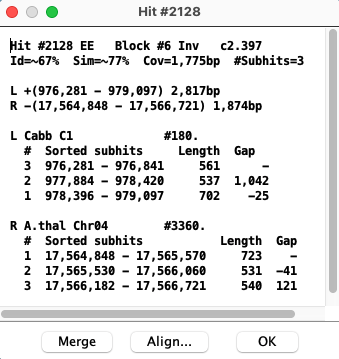 |

| Align... | Select to view the subhits text alignment or the gene text alignment. See Align.... |
| Conditional: | |
| Merge | This button will be present if there are overlapping hits (Gap<=0).
Select to view a popup of the merged hits. See Hits. |
| Order | This button will be present if the numbers in the # column for the target genome are not in sequential order. The Order function will sort by the '#' number, and the subhits will no longer be in sorted order; these are referred to as disordered subhits. See Hits. |
Gap vs no-gap The Hit #230 popup above shows Cabb to have a distance between #1 and #2 of -35. Viewing the Cabb alignment, #230.1 and #230.2 overlap but they do not overlap for A.thal.
| Selected Cabb alignment
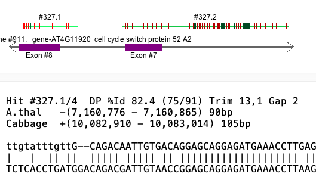 | Selected A.thal alignment
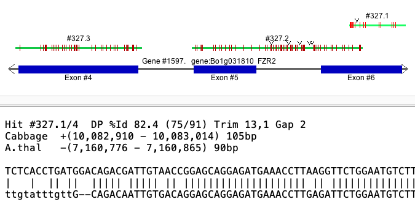 |


Gene Details
Information: Hovering the mouse over a gene will show its information in the Information box.
|
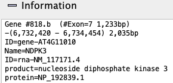 | ||||||||||

| Popup: To view the popup of the gene description, right-click on the gene in the track; the selected gene will turn cyan.
The top group of lines is the same as shown in the gene Information. This is followed by any hits that aligns to it; Gene #818.b has 2 hits. For each hit:
| 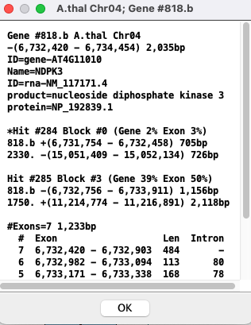 |


Hit-Gene Details
The example below shows two genes that are connected by the hit-wire. For the gene popups, the exons are numbered differently; this is due to differences between NCBI and Ensembl annotation files.
Control panel and navigation
| History | Zoom and Show | Color wheel, etc | Navigate | Go to top |

The buttons are described in the order found in the control panel image above.
History Event: SyMAP retains a record of the prior views (like a web browser).
- A History Event occurs when the coordinates or tracks have been changed by (1) any of the 4th-7th buttons (+,-,shrink,scale), (2) select a region with the mouse, (3) use the Track Filter to change coordinates.
- Any annotation, highlighting, or hit-wire display changes by Track Filter or Hit Filter are NOT a history events.
- When a new Track Filter coordinate change is applied, all previous history events are cleared and it becomes the next history event in the list.
- The first 3 buttons describe below apply to the history events.
| Go back to its original display. | |
| Go back one history event. | |
| Go forward one history event. | |
| Zoom in - shrinks the base pair view region by 50%, keeping the same center. | |
| Zoom out - doubles the base pair view region, keeping the same center. | |
| The shrink button reduces the space between tracks. This is useful when viewing more than two tracks, e.g. click Exp_2D. | |
| By default, the tracks are the same size even though they represent different base pair lengths. The scale button resizes the tracks so they are to scale, i.e. represent their lengths. This is a toggle, so click again to resort back to the default. |

Zoom and Show: These two buttons performs a function on the selected region.
- Check one of the buttons, then click the button and select from the menu (unless the default is desired).
- Select a region by clicking the mouse left button on a location of the chromosome, drag and release - the function will be performed when the mouse is released.
- The functions are described as follows:
| Zoom |
| ||||||||||||||
| Show |
|
Color wheel, etc:
| See Color Wheel, Print and Help. | |
| Prints the graphics 2D region to an image file (note, this does not include the control bar, etc). | |
| Displays the online help. | |
| Popup of quick help. |
Mouse navigation:
| View region | Drag left mouse button | Press down on the left mouse button on a chromosome track, drag the mouse and release it. By default, this will zoom into the selected region for both chromosomes. This action can be changed with the Zoom and Show as discussed above. |
| Resize Track | Drag bottom of track | Position mouse at bottom of track (resize cursor appears), hold down left mouse button, and move mouse. |
| Scroll One Track | Mouse wheel | Position mouse over track and use mouse wheel to scroll up/down the track. |
| Scroll Both Tracks | Mouse wheel | Position mouse in the hit space to scroll up/down both tracks. |
| Popup of partial set of filters | Right mouse button | Position mouse over track area (for Track Filter) or white space between tracks (for Hit Filter), and click right mouse button to view the respective popup filter. |
Track Filter
| Show Gene | Show Text | Graphics | Coordinates | 3-track | Popup | Go to top |
Select Track Filter button above the sequence track to change the display for the respective chromosome. If the sequence track does not have a given annotation (e.g. Gaps), then that item will be un-selectable.
→ All options in the first 3 sections occur immediately; Coordinates changes occur on Save.
→ Only Coordinates changes are History events.
|
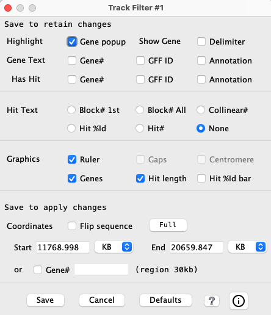 | ||||||||||||||||

Only one of the two instances of Annotation can be checked; checking one automatically turns of the other.
2 Has Hit: The Gene#, GFF ID and Annotation will only show if the gene has a hit.
| Show Text1 | Only one of the following options can be selected.
Show the option's value along the edge of the sequence track (e.g. 2D display c629). | Symbol |
| Block# 1st | Put the block number above the first hit of the visible block. | bN |
| Block# All | If the hit is in a block, its block number will be shown. | bN |
| Collinear# | If the gene-hit is assigned to a collinear set, its collinear set number will be shown. | cN |
| Hit# | The number assigned by SyMAP for the hit.
These are numbered sequentially along one of the chromosomes; see Terminology. | #N |
| Hit %Id | Percent identity of the alignment; see Terminology. | N% |
| None | Nothing is shown (default). |

| Graphics | Any of the following can be simultaneously selected. |
| Ruler | Display of the ruler along the side of the sequence track. |
| Gaps1 | Display of sequence gaps (drawn as solid red rectangles) along the track. |
| Centromere1 | Display of the centromere (drawn as a cyan "X") on the track. |
| Genes | Display of the gene with exons along the track. (If unchecked, the other gene options are disabled). |
| Hit length | Display the hit length line along the inner boundary of the track. The subhits are colored brown and the gaps are colored gray (e.g. 2D display). |
| Hit %Id bar | The placement of the Hit length line is proportional to the %Identity. |
| Coordinates | All the following coordinate changes take effect on Save. |
| Flip sequence | Reverses the orientation of the sequence track. |
| Full | Sets the start and end positions of the sequence display to encompass the whole chromosome. |
| Start and End | The positions of the sequence display can be set via the corresponding text boxes. The units of the values entered can be selected from the accompanying drop down menus (BP, KB, MB, GB). |
| Gene# | Select the checkbox and enter a Gene# assigned by SyMAP. It
must be exact, i.e. if it has a suffix, the suffix must be included (e.g. 1234.b).
When Save is selected, the 30kb region around the gene will be shown and
the exons of the Gene# will be highlighted.
BEWARE: If the Hit Filter All hits filter is not turned on, you may not see the corresponding gene hits as they may be filtered. |
3-track: The Track Filter has two extra options, g2g2 and g2g1 for the reference track, which has both a left and right track. The usage of this feature is complex, see 3-chr conserved for details.
|
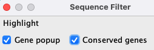 |

During a Chromosome Explorer session, Track Filters are reset to defaults between different 2D displays.
|
Track Filter Popup: A popup of a subset of the filters is shown by right clicking in the empty space
of the chromosome track; the popup is shown on the right.
For the Gene# with hit and Gene# all options, just one of the two can be selected; selecting one will turn off the other if it is selected; ditto for the Annotation options. Changing an option here changes it in the Track Filter and vice versa.
Gene highlighting summary:
|
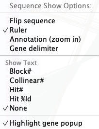 |

Hit Filter
| Highlight | Show | Other | Popup | Example | Go to top |
The Hit Filter menu allows the user to select which types of hits are displayed.
2The hits of each collinear set are colored one of 3 colors; see Color Wheel on how to change the colors. |
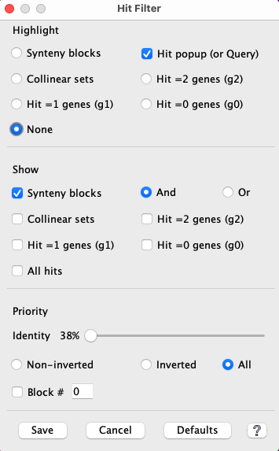 | ||||||||||||||||

| Show Any number of the following can be selected simultaneously. | |||||
| Synteny blocks | Hits that are part of a synteny block.
| ||||
| Collinear sets | Hits that are part of a collinear set.
See example below and Details. | ||||
| Hit =2 genes | Hits that align to genes on both ends (g2). | ||||
| Hit =1 genes | Hits that align to a gene on one end (g1). | ||||
| Hit =0 genes | Hits that do not align to any gene (g0). | ||||
| All hits | Show all hits. | ||||
| Priority | The following take precedence over the above. |
| Identity | Move the slider to view only the hits with >= the specified identity. |
| Non-inverted | The two alignment strands for the hit have the same orientations (++ or --). |
| Inverted | The two alignment strands for the hit have different orientations (-+ or +-). |
| Block# | Enter a block number and only hits from that block will be shown.
Precedence: This takes precedence over everything but the Identity and Signs. While the filter window is showing, the user can enter a block number following by the Enter key to see the block, then try the next one to see the next block. If an invalid block number is entered, no hits will be shown. |
| G2xN | This is a hit filter that occurs in the Track Filter of the reference track for a 3-track display; see 3-chr conserved. It takes precedence over all other hit filters. |
Hit Popup
|
A popup with a subset of the highlight filters is shown by right clicking in the white space between tracks;
the popup is shown on the right.
During a Chromosome Explorer session, Hit Filter settings are not retained between different 2D displays. |
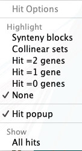 |

Filter Example
The image below has the Track Filter options to show Gene Delimiter and Collinear# on the left, Hit# on the right, and the Hit Filter option to highlight Collinear Hits.|
Show Gene Delimiter: Note that for Chr01, gene 791 would blend with gene 792 if it was not for the black line at the top. Highlight Collinear Hits: When hits belonging to Blocks or Collinear sets are highlighted, subsequent blocks/sets will have an alternating color relative to one chromosome of the pair. For example, in the image on the right, the green highlighted hit-wires are part of one collinear set (c31) and the pink highlighted hit-wire are part of another (c32). See Details for more information. |
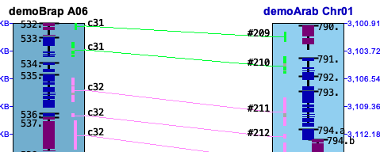 |
Base Align
| Graphical Align (Show pull-down) | Text align (Hit popup) | Alternatives | Go to top |
To build the synteny, SyMAP uses MUMmer Promer by default for analysis of two different genomes. Promer translates sequences, uses a fast suffix tree alignment algorithm, then converts the coordinates back to nucleotide. To display the alignment in SyMAP, SyMAP performs a semi-global dynamic programming (DP) algorithm on the nucleotide sequences using the MUMmer coordinates, which can produce a slightly different alignment.
Graphical Align (Show pull-down)
If the hits are from Blast results, alignments are turned off!! The end of Summary will state whether a blast file of hits was used. If more than 2 tracks are shown and one of the two pairs used blast hits, the alignments are turned off for everything.Check Show on the 2D control bar, then select a region of maximum 50kb, which must have hits. To select a region, drag the mouse along the sequence and release when the desired range is highlighted.

The aligned base view of the clustered subhits will appears in a new window. This view consists of a ruler along the top showing the area of the sequence covered, the hits, and the genes. In the lower text panel, it indicates that the alignment has been trimmed on the ends.
Subhits
Subhits are displayed as lines, where red horizontal lines are mismatches,
forest green is deletion and a downward arrow is insertion.
When two hits overlap, one will be shown above the other. Sometimes one appears to overlap another when they do not;
this happens due to gaps.
Clicking on a hit line shows its base alignment view in the bottom of the dialog; if the input genome sequence was soft-masked, the masking is retained in the alignment.
Genes
Annotated genes are displayed below the hits. Blue exons are on + strand and burgundy are on the - strand.
| Strand for Algo1: Sometimes it is wrong in this view. In the image on the right, the A.thal gene is on the negative strand, but its aligned hit is shown on the positive strand. Most of these occurrences have been fixed in v5.4.8, but a few will have slipped through. |
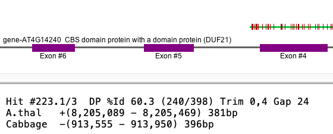 |

Text Align (Hit popup)
If the hits are from Blast results, alignments are turned off!! The end of Summary will state whether a blast file of hits was used. If more than 2 tracks are shown and one of the two pairs used blast hits, the alignments are turned off for everything.Hover over a hit-wire and right click, which will result in the information popup (e.g. Hit #100 below).
Click the Align... for the Align options.
The left alignment shows the Align hit sequences and the right side
shows the Align gene sequences. The Align gene sequences
uses the spliced transcripts, which are either the Exons or CDSs depending on which was loaded;
in the below example, CDSs were loaded for both species.

Trimmed alignments: SyMAP extracts the sequence between the coordinates provided by MUMmer and aligns the sequence using a dynamic programming algorithm. When the sequences do not align fully, the alignment is trimmed. This is illustrated above for subhit 5, where the Trim 17,0 indicates that 17 bases were trimmed off the end. The un-trimmed alignment can be viewed by selected No trim.
Alternative base views
To view the base alignment, use the Show Seq Option (from the 2D Show pulldown). Select the 1st region to be aligned, then select the 2nd region. These two sequences can be copied from the popups, and aligned with online tools such as EMBOSS Matcher or EZ BioCloud (max 5000bp).Another alternative is to find the hit in the Queries, then view the MSA (either MUSCLE or MAFFT can be used).
Dot Plot #3 (Multi-genome)
All selected projects will be shown in the Dot Plot. The interface is the same as discussed in Dot Plot (Two Genome). The Dot Plot in the image below shows three genomes; A.thal is the reference, which can be changed with the pull-down at the top.
General
| Self-synteny | Data Download | Color Wheel, Print and Help (?) Icons | Go to top |
Self-synteny
- Hits are computed for the lower part of the Dot Plot diagonal, then mirrored to the upper part.
- The Hit# is assigned in consecutively along one of the chromosomes (see Terminology).
- Self-chromosome (e.g. hits from Chr01 to Chr01) are problematic for display and has some issues.
| Manager Available Syntenies: Only have the project with
self-synteny selected in order to view its results.
Self-synteny can be viewed in all views (e.g. Demo Dot Plot), with the following exception: |

- Linear: Does not work for self-synteny.
- Dot Plot: For the self-chromosome, you must select a block from the lower diagonal.
- Circle:
- Whole genome: Self-synteny can be viewed.
- Chromosome Explorer:
- If multiple species are being viewed and at least one has self-synteny, then there will be a Self-synteny toggled, which can be toggled to view the self-synteny blocks.
- A single species can be viewed.
- The Scale option makes no difference in the display with only one species.
Queries
- Queries works for self-synteny (as of v5.7.5), but it has multiple problems:
- Minor hits: There is no good way to see all the minor hits.
- The Every+ will not be shown.
- Self-chromosome minor hits for Hit# or Gene# can not be
displayed;
e.g. Demo_seq Gene# 3.5 shows minor hits to chr5 but not to the self-chr3.
Gene# has a popup stating the number that cannot be displayed, but Hit# does not.
- The Groups filter section will not be shown as they do not work for self-synteny.
- 3-track display does not work: i.e. selecting 2 rows followed by 2D.
- Problem: Collinear with chromosome selection shows duplicate sets.
Queries also displays things a little different:
- The Abbreviation for the 2nd is the same as the 1st with the last character replaced with X.
- The Block# can be Chr1.Chr2.B or Chr2.Chr1.B; they are the same
- The 2D display will have the chromosomes in the opposite order than expected.
- Single filters:
- The NumHits column counts each hit both above and below the diagonal (i.e. twice).
- It always shows the 1st project only; there will be empty columns for the 2nd.
- Minor hits: There is no good way to see all the minor hits.
Export (download data)
There are three ways to download data for SyMAP synteny blocks, individual hits, and annotations:Manager:
- Block Report: Select the species of interest, select Report... on the Manager, then select Block Report
Queries:
- Query Export:
The results of a query are shown in a table,
which can be exported as a CSV or HTML file. Additionally,
the hit sequences or unique spliced genes from the genes i can be exported in FASTA format.
- Gene Report: A report that combines rows of a query can be created and exported in HTML or TSV format.
Color Wheel, Print and Help (?) Icons
Most displays have one or more of the following icons (Color, Print, Help, respectively):.
Print The print icon is for printing the image, which only saves the graphics area (not control buttons). If this does not provide the view you want, use the system "Screen Capture" (all the images in this document were created with screen capture, along with the images in the SyMAP publications).
Help The ? icon brings up this web page, typically to the correct section (obviously, there needs to be an internet connection).
Color Wheel This icon opens a menu for customizing colors; the colors changes are saved in a file called .symap_saved_props which resides in the user's home directory. Hence, the changes are preserved between sessions. In contrast, Filters changes only exist for the duration of the display.
Click the Color Wheel in any of the displays, then:
- Click a tab (e.g. Track) to view the associated colors.
- Click a color box (e.g. Ruler) and a color chooser (Swatches) will popup
that lets you change the color.
- Ok: Instantiate all changes and close the menu.
- Cancel: Cancel any changes and close the menu.
- Default: For the selected tab, change all colors back to the default colors.
|


Hit tab:

| Note that highlighting blocks and collinear sets share the first two colors, but have their own settings for the remaining colors. | ||||||||||||
Dot Plot tab:
|

| Go to top |
Email: cas1@arizona.edu